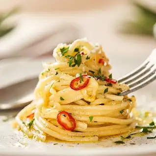

Go back to recipes
Aglio e Olio

Dish description:
Spaghetti Aglio e Olio, pronounced ah-li-oh ee o-li-oh, is a traditional Italian dish made with just pasta, garlic, simple seasonings, and olive oil.
This easy, economical pasta recipe takes less than 20 minutes and is filled with so much delicious garlicky flavor!
ingridients
- Spaghetti pasta
- Extro Vergin olve oil
- Garlic
- chilli flakes
Steps:
- Boil the pasta according to package description.
- Chop up the parsley and garlic.
- Heat olive oil in a pan on medium heat and add the aromatics together with salt.
- Wait for the pasta to finish cooking and keep the oil from burning
- When the pasta is ready combine it with the oil and add a little pasta water
- Stir and keep adding water until desired level of creamyness.
- Serve and enjoy!